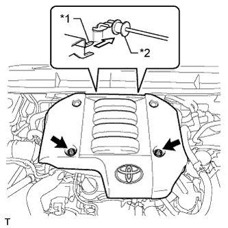

ДАТЧИК АБСОЛЮТНОГО ДАВЛЕНИЯ В КОЛЛЕКТОРЕ (для моделей с DPF) > УСТАНОВКА |
| 1. УСТАНОВИТЕ ДАТЧИК АБСОЛЮТНОГО ДАВЛЕНИЯ В КОЛЛЕКТОРЕ |
Установите датчик абсолютного давления в коллекторе и закрепите его болтом.
Подсоедините вакуумный шланг и разъем датчика абсолютного давления в коллекторе.
| 2. УСТАНОВИТЕ КРЫШКУ ДВИГАТЕЛЯ № 1 В СБОРЕ |
|  |
Присоедините 2 крепления крышки двигателя № 1 к кронштейну крышки двигателя № 3.
| *1 | Крепление крышки двигателя № 1 |
| *2 | Кронштейн крышки двигателя № 3 |
Заверните 2 гайки.